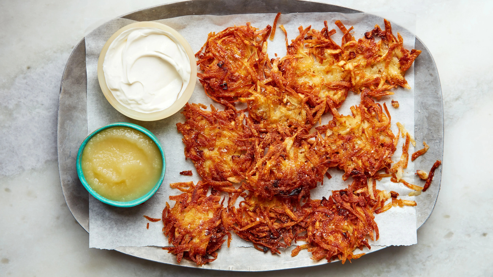

Potato Latkes

Traditional Potato Latkes
Latkes are basically a potato pancake in traditional Ashkenazi jewish cuisine. The main Ingredients
are obviously potato, with onion, egg, flour and an oil. Some other recipes also include
vegetables to add a different flavour profile, namely carrot or zucchini. If you're feeling
like a little extra zip, serve with applesauce or smoked salmon.
Potato latkes are made for celebrating Hannukah but that doesn't mean you can't enjoy
these delicious potato flapjacks all year round. Be careful not to eat too many of these, however.
They have a lot of calories and fats due to the large amounts of oil.
Ingredients
- 2 Large Russet Potatoes
- 2 Large Eggs
- 1 Onion
- 1/4 Cup All-Purpose Flour
- 1 tspn Baking Soda
- Safflower Or Another Frying Oil
- Pepper to taste
- Salt to taste
Steps
- Peel and grate potatoes with a cheese grater onto a cheesecloth
- Wring out as much liquid as possible from the potatoes
- Add potatoes, eggs, flour, baking soda and seasonings into a large bowl
- Mix until flour is incorportated throughout
- Heat oil over a medium high saucepan
- Shape potato mixture into disks and add to pan
- Flatten potatoes further with spatula, flip when edges are golden brown
- Fry until second side is crispy
- Plate and top with preferred amount of salt
Back to main